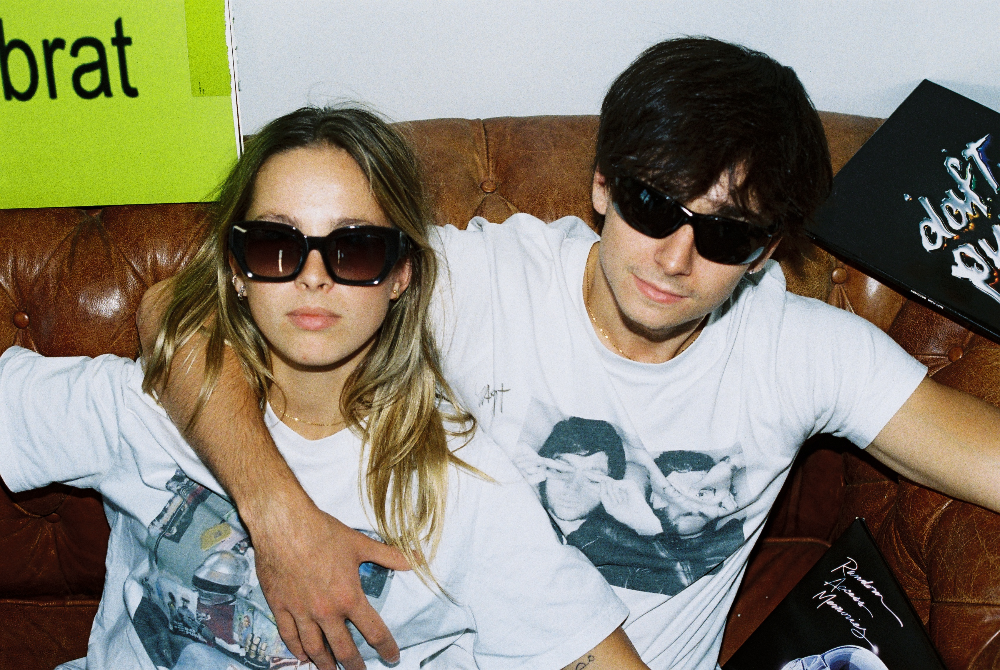

Everyone loves 175The collective · since 2025
Born from a deep love of electronic music and the French touch movement, 175 records is the project of two friends, Louise and Valentin.
One simple ambition: gather music lovers around immersive Paris nights that revive the mythical energy which shaped the electro and techno scene.
By putting emerging artists and new sounds forward, 175 records sets the tempo of the Paris night — between heritage and renewal. Bringing that era back to those who lived it, and revealing it to a generation too young to have known it.

A lineup is a statement. We keep ours open, mixed and loud — and we back MGBD.
No fixed brand. Each party invents its own visual world.
We honour the French touch and push the artists writing its next chapter.
Writing about us, booking a set, or shooting a night? Grab the press kit (logo, photos, bio) or reach out directly.
Everyone loves 175.